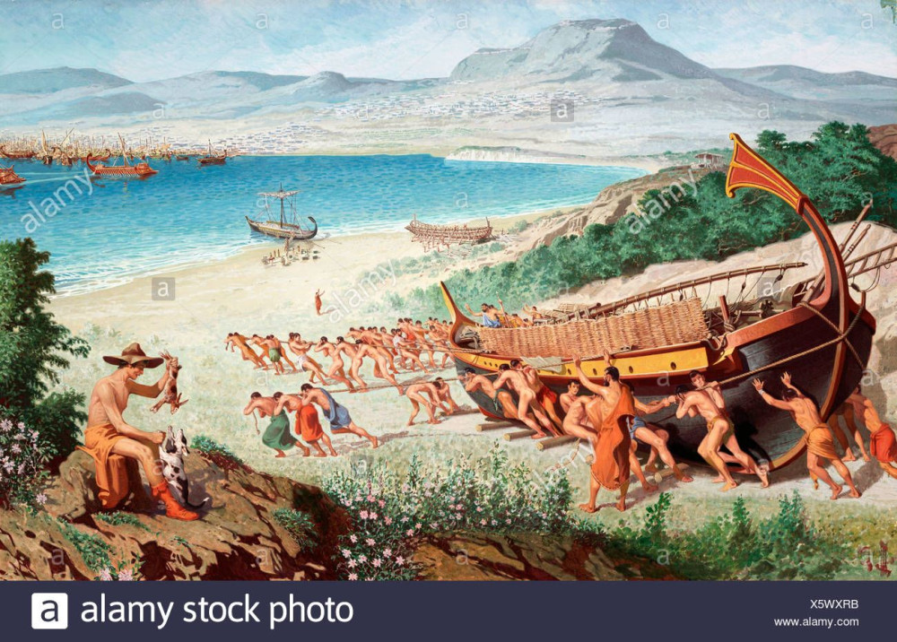

Но Величий неких тайна
Мне до времени открылась,
Я Высокое познал.
А. А. Блок. «Как свершилось, как случилось?..»

Мощный Аякс Теламонид двенадцать судов саламинских
Вывел и с оными стал, где стояли афинян фаланги.
Пер. Гнедич
Мощный Аякс Теламоний двенадцать судов саламинских
Вывел с собою и стал, где стояли фаланги афинян.
Пер. Вересаев
Гомер. Илиада. 2.557-8
Αἴας δ᾽ ἐκ Σαλαμῖνος ἄγεν δυοκαίδεκα νῆας,
στῆσε δ᾽ ἄγων ἵν᾽ Ἀθηναίων ἵσταντο φάλαγγες
Hom.Ill. 2.557-8
То, что было невозможно, он замыслил, он свершил,
Блеск фаланги македонской видел Ганг и видел Нил.
В. Я. Брюсов. Смерть Александра
Только
у пальца безымянного
на последней фаланге
три
из-под бриллианта -
выщетинили
В. В. Маяковский. Страсти Маяковского
τά δέ των νεωλκών ξύλα, όΐς ύποβληθεισιν έφέλκονται αϊ νήες, φάλαγγες και φαλάγγια
Деревянные направляющие, которые ставят под корабли и по которым их тащат называются фалангами.
Julius Pollux. Onomasticon. 7.190.7
На берегу затем курган был насыпан высокий
Этому мужу. На нем есть знак в назиданье потомкам —
Дикой маслины ствол корабельный листвой зеленеет
Возле подножья скалы Ахеронтской.
Пер. Г.Ф. Церетели